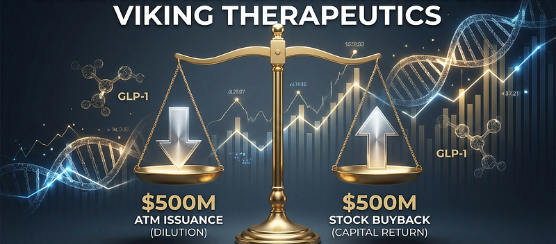

Viking Therapeutics Just Made Two $500 Million Bets — In Opposite Directions
A doubled cash burn, a Phase 3 readout still a year away, and two half-billion-dollar moves pointing in opposite directions.

A doubled cash burn. A Phase 3 readout still roughly a year away. And two half-billion-dollar moves, 48 hours apart, pointing in opposite directions.
On July 29, Viking Therapeutics let a $200 million fundraising facility expire — with $40 million of it still unused — and replaced it, the same day, with one more than four times the size: $500 million. The next day, its board went the other way, authorizing a separate $500 million buyback of its own stock. Two half-billion-dollar decisions, 48 hours apart, pulling in opposite directions, at a company burning cash more than twice as fast as it was a year ago and still roughly a year out from the Phase 3 results that will actually decide its future. Untangling the two tells you more about what Viking's management believes than either headline number does on its own.
Read quickly, this looks like housekeeping. Read carefully, it is a company expanding its capacity to raise capital and its capacity to spend capital buying its own stock back, in the same week. Those aren't contradictory instincts, but they are worth sitting with, because Viking is not a company with money to spare in the ordinary sense. It has no product on the market, no revenue, and a defining clinical readout that its own filings put more than a year away.
On 29–30 July 2026, Viking retired its old at-the-market facility and replaced it same-day with a new $500 million ATM, then authorized a separate $500 million buyback the next day — two $500 million actions, 48 hours apart, doing opposite things.
The prior buyback authorization, $250 million, was never used. Zero shares were repurchased in 2025 or the first half of 2026.
Net cash used in operating activities was $239.1 million in H1 2026, more than double the $99.4 million used in H1 2025.
Management states its $501.9 million in cash and short-term investments is sufficient to fund operations "through at least September 30, 2027" — but the VANQUISH trials are only guided to complete "in 2027," with no quarter attached.
VKTX fell more than 3% in the days after the new ATM was disclosed, on its way to its worst month since January 2025. None of this is dilution yet, and none of it is a funding crisis — it is a specific question about what a company does with capital when its defining data is still roughly a year away.
What actually happened, in order
Start with the ATM, because the mechanics matter and because the company's own quarterly filing undersold what it was about to do.
Since 2023, Viking had an at-the-market facility authorizing the sale of up to $200 million in shares. By June 30, 2026, it had sold $159.6 million worth — 4,591,231 shares — leaving $40.4 million of capacity. On July 29, with that capacity still available, Viking terminated the agreement. There was no penalty for doing so; the agreement was terminable at will.
That same day, Viking signed a new at-the-market agreement with five banks — Stifel, Piper Sandler, Cantor Fitzgerald, Oppenheimer and Canaccord Genuity. The Form 10-Q, filed that same day, described the new agreement cautiously: the company "may not sell any shares under the New ATM Offering unless and until it has filed a new registration statement" — language that reads as forward-looking and unresolved. It wasn't unresolved for long. Also on July 29, Viking filed an automatic shelf registration statement (Form S-3ASR) — a filing that, for a company with Viking's filer status, becomes effective immediately on filing, with no waiting period. That shelf registers the New ATM Offering at a disclosed size: up to $500 million.
So within about 24 hours, Viking retired a facility with $40.4 million of remaining capacity and replaced it with one sized at more than twelve times that. The market noticed: VKTX shares fell more than 3% in the days after the filing became public, part of what one report called the stock's worst month since January 2025.
Two $500 million actions, not one
The at-the-market facility is a capital-raising tool — a way to sell shares into the market over time. Confusingly, a second and completely different $500 million figure appears in the same filing window, and it's worth being precise about which is which, since some secondary coverage has blurred the two together.
"In July 2026, our board of directors terminated the 2025 Repurchase Program, and authorized a new stock repurchase program… Under the New Repurchase Program, we may purchase up to $500.0 million in shares of our common stock over a period of up to three years."
A buyback runs in the opposite direction from an ATM — cash out, share count down — and authorizing one is generally read as a management signal that the stock is undervalued relative to where the company would rather deploy its own capital.
Except Viking has been here before, and did nothing. The prior repurchase program, authorized in February 2025 for up to $250 million, sat entirely unused. Not one share was repurchased during 2025 or the first half of 2026. The company's own risk factors are candid about why this new one might follow the same path: "The Repurchase Program may be suspended, modified or discontinued at any time, and we have no obligation to repurchase any amount of our common stock under the Repurchase Program." No repurchases under the new program have been disclosed as of this writing.
So the honest description is this: in the space of 48 hours, Viking activated a genuinely new $500 million capacity to raise capital, and separately authorized — without yet using — a $500 million capacity to spend capital buying its own stock. Both are real. Neither cancels the other out. A company can be simultaneously more able to dilute and more inclined to buy back, and the fact that it positioned itself to do both at once, in the same week, against an accelerating cash burn, is the actual story here.
What the burn actually looks like
Whatever the buyback signals, it is being authorized against a real and accelerating cash outflow. Net operating cash burn more than doubled year over year, while R&D expenses surged as Phase 3 trials scaled up.
Of the $55.6 million increase in Q2 R&D spending alone, the company attributes $67.5 million specifically to higher clinical trial costs — meaning the underlying trial-cost increase was even larger before being partly offset by lower manufacturing and preclinical spending that quarter. A further $163.6 million came in from investing activities, but that is not new money: it is the company's own investment portfolio maturing and being drawn down to fund operations, a normal move for a cash-rich clinical company, but not a capital source in the way an ATM or a buyback is.
Against this, Viking held $501.9 million in cash, cash equivalents, restricted cash and short-term investments at quarter end. Management is explicit about what that buys:
"We believe our cash, cash equivalents and short-term investments will be sufficient to fund our operations through at least September 30, 2027, which is more than one year after the date of our filing of this Form 10-Q."
That is a real, specific, filed statement, and it is more comfortable than the picture the burn rate alone would paint. It matters for anyone modeling this stock, because it is management's own legal representation of solvency, not a market estimate.
Where the runway meets the trial calendar
The reason the runway question matters at all is the trial design. Both Phase 3 VANQUISH studies measure body weight change against placebo at week 78.
VANQUISH-1 finished enrolling in November 2025; VANQUISH-2 finished in March 2026. Add the treatment period, then database lock and analysis, and the studies complete sometime in 2027 — consistent with Viking's own language elsewhere that it looks forward to "completing the VANQUISH studies in 2027."
Put the two statements side by side. Management says cash lasts through September 30, 2027. Management separately says the trials complete "in 2027," without a quarter attached. If VANQUISH data lands in the first three quarters of 2027, the stated runway covers it comfortably. If it lands in the fourth quarter or slips into 2028 — and Phase 3 obesity trials of this design have not historically finished early — the margin narrows to something much tighter than "more than one year," and the company would be leaning on the now-active $500 million ATM, or some other financing, before the defining readout arrives.
That doesn't make the funding picture urgent. It does make the specific timing of "2027" — a word Viking has used in press releases but not committed to a quarter for — the single most financially consequential piece of information about this stock that has not yet been disclosed.
The part worth remembering if you're counting on a takeout
A meaningful share of the bull case for Viking rests on the idea that a larger pharmaceutical company eventually acquires it. That may happen. But it's worth knowing what Viking's own charter says about how hard that would be to force.
The company's amended and restated certificate of incorporation includes a classified board, no ability for stockholders to act by written consent, no ability for stockholders to call a special meeting, authorization for the board to issue "blank check" preferred stock without a shareholder vote, and a requirement that at least 66⅔% of stockholders approve amendments to several of these provisions. Delaware's Section 203 business-combination statute applies as well.
None of this prevents a deal Viking's own board wants to do. It does mean that a shareholder holding the stock specifically because "someone will have to buy them eventually" is relying on a board-initiated transaction, not outside pressure — because the charter is built to make outside pressure difficult. That is a meaningfully different bet than the one many holders think they're making.
Two changes at the top, worth noting without overreading
Two personnel items landed in the same filing window. Chief Operating Officer Marianne Mancini is retiring effective July 31, 2026, transitioning into a consulting role focused on clinical operations. And on August 1, Dorothy Kelly-Gemmell joined the board — a director whose background is specifically commercial: prior roles include Chief Commercial Officer and President at GoodRx, and commercial leadership at Capsule and AbleTo.
A single board appointment is thin evidence for anything. But a commercialization-focused director joining a company whose lead product is not expected to file for approval before 2027 at the earliest is at least consistent with a board thinking ahead to a launch, and it's the kind of detail that's easy to miss inside a filing dominated by trial and financing news.
A specific quarter for VANQUISH topline, rather than "2027." This single disclosure would resolve most of the uncertainty here.
Actual repurchase activity under the New Repurchase Program in the next two quarters, which would distinguish this authorization from the unused one that preceded it.
Confirmation of what the H1 2025 comparison implies going forward — if clinical costs continue rising at anything close to the current pace once the oral Phase 3 begins in Q4, the September 2027 guidance itself may need to be revisited before investors get there on their own.
Conclusion
Viking Therapeutics spent 48 hours in late July doing two things that pull in opposite directions. It let a working ATM lapse with $40.4 million of capacity left, then activated a replacement sized at $500 million — a genuine, immediately effective expansion of its ability to sell stock. Separately, it authorized a $500 million buyback that its own risk factors describe as something it may never use, exactly as the $250 million authorization before it went unused. Those are two different signals, from the same management team, in the same 48 hours, and they don't resolve into a single clean story.
What is worth sitting with is the ambiguity itself. A company with a defining readout still roughly a year out, burning cash at an accelerating rate, chose in the same week to expand both its capacity to raise capital and its capacity to return it. Whichever one it actually uses will tell you more about what management believes than either announcement did on its own.